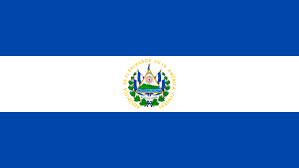
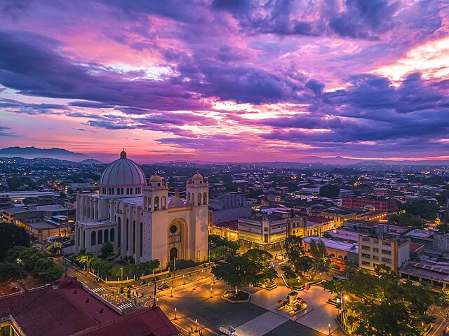
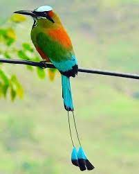
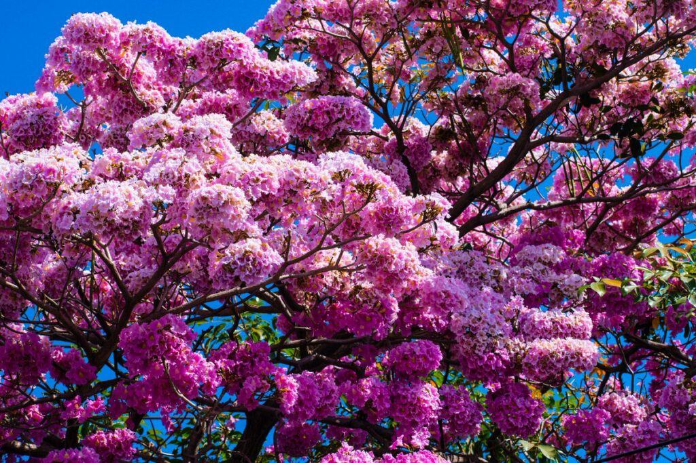
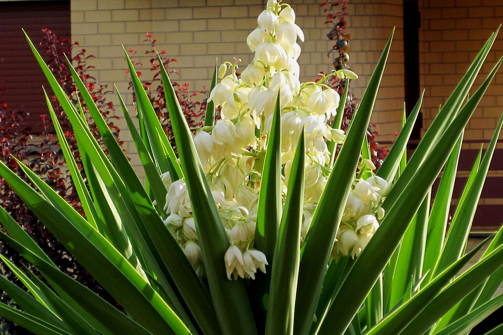

Pagina web informativo sobre El Salvador

Acerca del El Salvador
El Salvador es una pequeña nacion de America Central. Es conocida por sus playas
en el oceano pacifico, los sitios de surf y el paisaje montañoso. Su Ruta de las
flores es un camino serpenteante que pasa por plantaciones de cafe, tienen bosques tropicales
con cascadas. La capital, San Salvador, con volcanes como un espectacular telon de fondo, tiene
varios museos y el Teatro Nacional que se encuentra en el Centro Historico de la capital.

Simbolos Patrios
-Escudo Nacional: El escudo de El Salvador fue creado junto con la actual bandera nacional
por Decreto Lesgislativo del 17 de mayo del 1912. Fue diseño por el caligrafo salvadoreño Rafel Barraza
Rodriguez

-Ave Nacional: Declarado ave nacional por Acuerdo Lesgislativo del 21 de octubre de 1999, el torogoz
comunmente llamado talapo, recibio este honor debido a su singularidad belleza y su plumaje multicolor. Esta
especie se encuentra en peligro de extincion.

-Arbol Nacional: De acuerdo al Decreto Lesgislativo N°. 44 del 1 de septiembre de 1939, se designaron
como arboles nacionales el Balsamo y el Maquilishuat, siendo este el ultimo el que logro mayor arraigo en el amplia
popular. Este arbol puede medir 15 metros de altura.

-Flor Nacional: La flor de izote fue reconocida oficialmente como flor nacional del El Salvador, por la asamblea
legislativa, el 21 de diciembre de 1995. La flor de izote crece de un arbusto que florece mayormente entre los meses de
abril y mayo.
